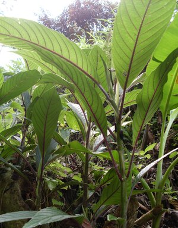
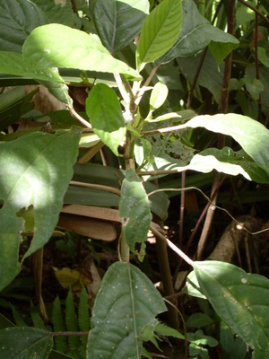

sehè  
/sɔgɔʔ/
n.
“small_tree”
n.
a small tree of which the leaves are mildy poison if scratched by them. The wood is very weak mahebù
Wrd.Gloss: small_tree
Ka sehè iyan ka ngaran te hilamunen wey kayu ne masakit ne egpakaragket te laplap. Masulug ka klasi kayi su due derakel wey due dereisek, wey due man-e egpakeiling karakel te kayu. Ka duma ne sehè amana ne masakit wey ka duma kabaluan dè se lalas.
Kenè kew leugleug diyè te mabenes su masalig ka sehè dutu.
Do not wander at the bushy-place because there are lots of poisonous shrub there.
Nakapamaneyik dengan ka iney ku te sehè su indula te mahintalunan ne babuy.
My mother caused to climb up a poison shrub because she was attacked by a wild pig.
Iyan man dè egpakabawi te sehè ka dalid din.
What can cure the poison of poisonous shrub is its roots.
Eng. tree variety; poison shrub; stinging plants
OCM: Flora (137)
DDP: Tree (1.5.1)
Online dict status: -
Usage level: RT
vt.
for someone (egsehè, migsehè/insehè, sehè, agent, eg><ø-) to cause somebody (egseheen, insehe/migsehe/pigsehe, sehea, patient, eg><en-) to become itchy (as a result of touching the tree, especially the leaves)
Eng. itchy, to cause (by the stinging plants)
Online dict status: -
Usage level: R
vi.
for someone (egkasehè, nakasehè, actor, egkA><ø-) to become itchy as a result of touching the sehè tree, especially the leaves
Kenè kew lewu-lewuk diyè te mabbenes su egkasehe kew.
Don't take a walked in the forest might you can touch a stinging plants.
Cult. The treatment is to rub meat or dried fish on the affected spot and then let a cat lick it. Apparently the cat's tongue is not affected.
Eng. itchy, to become (by the stinging plants)
Online dict status: -
Usage level: R
Updated by: RJH,AAA,TME,AAA,QDL,RAA
Last updated: 20/Nov/2009
This page last updated: 03-Jan-2020
Copyright © 2009-2014, Matigsalug Language Christian Association, Inc